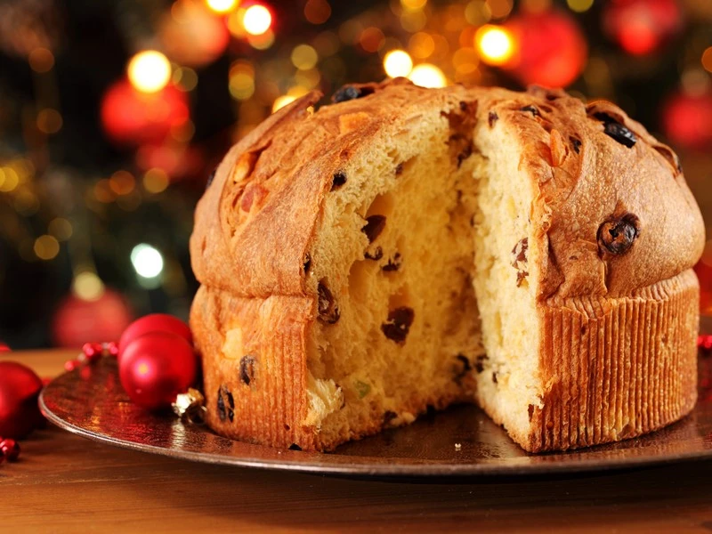

Panettone

Description
The king of all holidays is definitely panettone. Together with pandoro,
it is the Christmas lunch dessert par excellence that, although of Lombard origin,
is present on all Italians' tables on this Holy Day.
Preparing it at home is a small challenge that many choose to take up,
along with other recipes of the period such as nougat!
Today we will help you tackle it on the right foot,
thanks to one of the best recipes from master confectioner Alfonso Pepe.
Contrary to what it may seem, it is not such an arduous task...
you just need to be patient and take your time in the preparation because
panettone requires quite a long leavening time. In fact, in the version we present,
the panettone has been prepared using natural yeast; this will allow for a soft texture
that will keep for a long time and a richer aroma! Set the holiday table with Christmas sweets,
but for a perfect Christmas, panettone cannot be missed...
Ingredients
Ingredients for the first dough
- 250g manitoba flour
- 125g water (room temperature)
- 65g sourdough
- 65g sugar
- 70g butter
- 50g egg yolks
- 5g malt
Ingredients for the second dough
- 62g manitoba flour
- 40g butter
- 150g raisins
- 1 vanilla bean
- 30g candied citron
- 75g orange paste
- 20g lemon paste
- 50g sugar
- 50g egg yolks
- 2g salt
- 16g honey
- 70g candid orange
- 30g tangerine paste
Steps
preparation of the first dough
- To prepare the panettone, start by making the first dough. Pour into a bowl the malt,
the 65 g of caster sugar and the 125 g of water at room temperature .
Mix with a whisk until the sugar is dissolved; then pour the syrup into a planetary mixer fitted with a leaf whisk.
Then add the 250 g of manitoba flour at once and start kneading .
- t will take about 5 minutes and as soon as the dough has taken consistency add 65g of sourdough
starter refreshed 3 times during the day and continue kneading at moderate speed.
Meanwhile, prepare an emulsion of butter and egg yolks.
Transfer 70 g of soft butter to a small bowl and process with a hand whisk until creamy.
Add about half of the egg yolks and mix.
- Then add the remainder and mix again so as to obtain a homogeneous emulsion .
At this point add half to the running planetary mixer .
- aid absorption by using a drip pan, detach the dough that will have stuck to the leaf and run the planetary mixer again
at medium speed. When the dough is well dry and the butter has been completely absorbed add the remaining part
of the butter and egg yolk emulsion 13. Knead again until the dough is smooth and homogeneous,
then transfer it to a work surface, helping yourself with a mallet
- ve the dough a spherical shape , transfer it to the inside of a glass bowl, cover with plastic wrap and let rise for
about 12 hours at a temperature of about 26° until the dough has tripled in volume. In the meantime,
if you prefer to make your own mandarin, orange or lemon dough at home watch the box at the bottom.
preparation of the second dough
- For the second panettone dough using a tarot, detach the first (risen) dough from the glass bowl
and transfer it to the planetary mixer, still fitted with a leaf. Add 65 g of manitoba flour and run
the machine at moderate speed until fully absorbed. Next add the aromatic masses, namely orange paste,
mandarin paste and lemon paste ; then add the honey and the seeds of the vanilla bean.
Run the planetary mixer again until the flavors are completely absorbed. In the meantime,
prepare the emulsion again with 40 g butter and 50 g egg yolks, combining them twice as done previously.
- As soon as your dough is elastic, turn off the machine and add 50 g sugar.
Run the machine again for a few minutes and add a pinch of salt. Let it absorb and turn off the planetary mixer again.
Add the butter emulsion again in two times and finish kneading the dough until it is well strung.
Meanwhile, soak the raisins 11 and dice both the citron and candied orange.
- At this point drain the raisins well and pour them into a bowl, also add orange and citron and mix.
To be sure that the dough is ready, turn off the machine, take a portion and if by spreading it with your hands
it is thin but does not break easily, it means that it has reached the right elacisticity;
if not, knead the dough a few more minutes, otherwise add the candied fruit and raisin mix to the planetary mixer
and run it again at moderate speed.
- When the candied fruit mixture and raisins are well incorporated turn off the machine, detach the leaf and let the dough rest
for about 20 minutes inside the bowl of the planetary mixer, covering it with a dish towel.
After that, transfer it to a flat surface, give it a few folds and let it rest for another 30 minutes at room temperature;
there will be no need to cover it. Don't worry if the dough turns out a bit sticky help yourself to it by using a tarot.
To form and bake the panettone
- After the 30 minutes have elapsed, take 1050 g of dough, round gently to give a spherical shape and transfer inside a 1 kg paper mold
(exact dimensions are 22 cm in diameter and 8 cm high) . Use the remaining dough (about 150 g) to make two small panettoncini using muffin molds.
Heat the oven to 35°, then turn it off, cover the panettone with a glass dome and place the panettone and panettoncini to rise in the oven for 6 to 8 hours.
- Once it has risen, leave it uncovered at room temperature for about 30 minutes, so a thin skin will form on the surface.
With a paring knife make a cross-shaped incision and place a knob of butter in the center of the cross.
Bake at 175° in static mode for 50 minutes; after 20-25 minutes, take the panettoncini out of the oven and continue baking the panettone
for the remaining minutes. Then take it out of the oven and pierce it with 2 steel toothpicks on the two outer edges.
Let it cool upside down overnight, using two pans or two bowls of the same height to secure it.
The next morning turn it over, remove the toothpicks, and your panettone will be ready to enjoy.